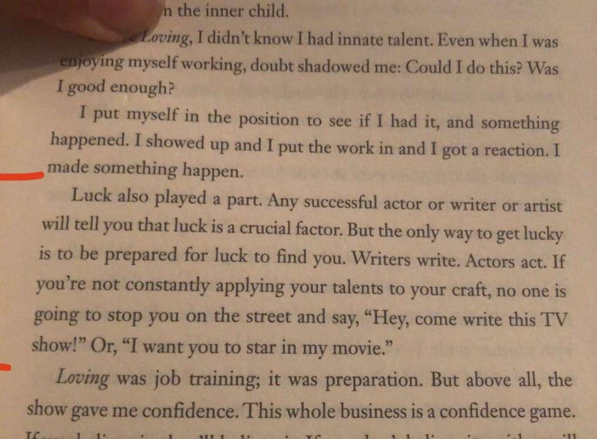
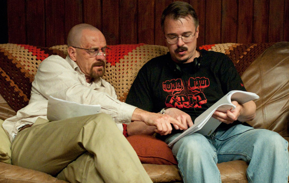

Thank you for visiting my portfolio. I vividly remember the day I told my father I wanted to be a writer. He laughed in my face. We were at the mosque for Ramadan. And he laughed in my face. Then he called over an irrelevant uncle to come and hear what I had to say. Then he made me say it again. And then they both laughed in my face. I carry that everyday.
Since my childhood, I was always in front of a television screen. Fascinated by animated cartoons and performing actors the likes of Jim Carrey, somewhere deep down I always knew that my imagination is my greatest gift. I gravitated toward the art of story telling as a resulted when it came time to pick a profession. My father tried to instill in me from a young age to decide what I wanted to do when I'm older; decide what you wanted to be as early as possible. However, the irony is, I already had; he just aint like the answer.
As a result, I spent years believing my dream is merely nothing more but an unfeasible goal. I was taught to look at it more as a hobby. I would feel ashamed when people asked what I wanted to be and I either had to lie about it or fake my confidence in my own dream. Can you imagine that? I think that is the beauty of college though. An opportunity to really explore one's self. My many years at the university taught me to embrace who I am. Cause at the end of the day, its all good man.
After graduating university in Spring 2020, I aspire to produce at least 5 scripts and then to gather a team to start a production of one of the original scripts I write. After I gain some personal experience on what its like to write, direct, and produce my own creation. Hopefully this can lead me to an opportunity at a seat in a writers room as a staff writer. With some writing credits under my badge, I can start working towards becoming a story editor. From there I hope to work my way in gaining an opportunity to become a showrunner, director, writer-producer, and one day a creator of my very own show.
 